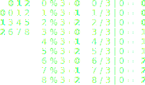

Recreating Thinking Machines' logo with D3
I love Thinking Machines' logo. It's a 6x6 grid of diagonal lines with varying rotation and thickness. Pretty bland if you just read it out loud. But the logo transforms into different configurations creating new identities and patterns. The way the lines rotate and form connections and how the thickness emphasizes those links effectively depicts a "thinking machine".
I tried recreating the logo and its animation in svg using D3. The following is a deep dive on how I made it.
Init
const d3 = window.d3
const size = 6
const logo = d3.select('.logo')
const width = logo.property('clientWidth') - 100
const height = logo.property('clientHeight') - 100
Old school script tags for imports! I can't live without ES6 anymore though
so I still have babel-cli as a dev dependency. Here we
select .logo and get its dimensions which are defined in css.
We subtract 100 for padding.
Creating the grid
// Position helpers
const col = d => d % size
const row = d => d / size | 0
const x1 = d => col(d) * width / size
const y1 = d => row(d) * height / size
const x2 = d => (col(d) + 1) * width / size
const y2 = d => (row(d) + 1) * height / size
function createGrid (el) {
const data = d3.range(size * size).map(d => {
return { x1: x1(d), y1: y1(d), x2: x2(d), y2: y2(d) }
})
el.selectAll('line').data(data).enter().append('line')
.attr('x1', d => d.x1)
.attr('y1', d => d.y1)
.attr('x2', d => d.x2)
.attr('y2', d => d.y2)
}
You'd usually want to create your grid with nested arrays. Why? Because it's easier to look up elements using coordinates. We use a flat array here because it's saner to deal with in D3. We define several helper functions to work out coordinates and positions. Let's go through each for a better understanding on how they work.
const col = d => d % size
const row = d => d / size | 0
Since we have a flat array, we need a way to get an element's column and row from its index. We do that by dividing the element's index by the grid size. The quotient is the row while the remainder is the column. Imagine a 3x3 grid:

x | 0 is like Math.floor(x) only cooler.const x1 = d => col(d) * width / size
const y1 = d => row(d) * height / size
const x2 = d => (col(d) + 1) * width / size
const y2 = d => (row(d) + 1) * height / size
To draw a line we need 2 points. For a 45° diagonal line, those
points should be opposing corners. We'll use top-left and bottom-right.

function createGrid (el) {
const data = d3.range(size * size).map(d => {
return { x1: x1(d), y1: y1(d), x2: x2(d), y2: y2(d) }
})
el.selectAll('line').data(data).enter().append('line')
.attr('x1', d => d.x1)
.attr('y1', d => d.y1)
.attr('x2', d => d.x2)
.attr('y2', d => d.y2)
}We use line svg elements to render the line grid data we
generated.
Transform
Now that we have our grid of lines, we next implement a transform
function that takes in a state array and applies that to our
line elements.
// Transform flags
const f = 0x01 // Forward slash
const b = 0x02 // Backward slash
const t0 = 0x04 // Thickness 0
const t1 = 0x08 // Thickness 1
const t2 = 0x10 // Thickness 2
const t3 = 0x20 // Thickness 3We use bit flags to toggle line attributes in our state. It makes defining the grid state terse and easy to change.
[
t0 | b, t0 | b, t0 | b, t0 | b, t0 | f, t0 | f,
t0 | b, t2 | b, t1 | b, t2 | b, t2 | f, t0 | f,
t0 | b, t1 | b, t3 | b, t3 | f, t3 | b, t0 | f,
t0 | f, t1 | f, t3 | f, t3 | b, t3 | f, t0 | b,
t0 | f, t2 | f, t1 | f, t2 | f, t2 | b, t0 | b,
t0 | f, t0 | f, t0 | f, t0 | f, t0 | b, t0 | b
]Above is an example state that describes the main Thinking Machines logo.
function transformGrid (el, state) {
return el.selectAll('line').data(state)
.transition()
.duration(1000)
.attr('stroke-width', function (d) {
let w = 5
switch (true) {
case (d & t3) > 0: w *= 1.75
case (d & t2) > 0: w *= 1.75
case (d & t1) > 0: w *= 1.75
}
return w
})
.attrTween('transform', function (d, i) {
const transform = this.getAttribute('transform')
const deg = transform ? parseInt(transform.match(/rotate\((\d+)/)[1], 10) : 0
// SVG transform rotates from 0, 0 by default
// We need to rotate from the line center instead
const cx = x1(i) + width / size / 2
const cy = y1(i) + height / size / 2
const nextDeg = d & b ? 0 : 90
const delta = nextDeg - deg
return function (t) {
return `rotate(${deg + t * delta} ${cx} ${cy})`
}
})
}We use transition to animate the applied transforms.
Thickness is straightforward setting of stroke-width. Note the
use of switch cases to cascade thickness increase. Tweening of
rotation is a bit trickier. The transform origin of svg elements default to
0,0 of the root svg so we need to write a custom interpolation
function to properly set the rotation point at the line center.
Decrypting text effect
The last bit of the animation is the text effect where the sub-heading of the logo appears to be in the process of decryption.
const randChar = d3.randomUniform(33, 126)
function setDesc (el, text) {
el.transition()
.duration(1000)
.tween('text', function () {
return function (t) {
const slicedText = text.slice(0, t * text.length | 0)
const chars = d3.range((1 - t) * text.length).map(randChar)
const randText = String.fromCharCode(...chars)
window.requestAnimationFrame(function () {
el.text(slicedText + randText)
})
}
})
}Nothing fancy here. We just continuously generate random characters and incrementally splice in the "decrypted" copy at the rate of the transition.
Animation loop
const states = [
{
descText: 'Data Strategy',
transform: [
t0 | b, t0 | b, t0 | b, t0 | b, t0 | f, t0 | f,
t0 | b, t2 | b, t1 | b, t2 | b, t2 | f, t0 | f,
t0 | b, t1 | b, t3 | b, t3 | f, t3 | b, t0 | f,
t0 | f, t1 | f, t3 | f, t3 | b, t3 | f, t0 | b,
t0 | f, t2 | f, t1 | f, t2 | f, t2 | b, t0 | b,
t0 | f, t0 | f, t0 | f, t0 | f, t0 | b, t0 | b
]
},
...
]
const svg = logo.select('svg')
const lines = svg.append('g').attr('transform', 'translate(50, 50)')
const desc = d3.select('.desc')
function animate (i = 0) {
const { descText, transform } = states[i % states.length]
transformGrid(lines, transform)
setDesc(desc, descText)
d3.timeout(_ => animate(i + 1), 3000)
}
createGrid(lines)
animate()Finally, we put it all together in an animation loop.